Changes in Accessibilities Over Time:
The accessibility maps were created using hexagon grids as they can tessellate to cover an entire area with an evenly spaced grid and have a low sampling bias due to its low perimeter-to-area ratio. The mode used for classification is Natural Breaks (Jenks) as it finds natural groupings of the data, and units for the legends is metres.
Primary School
The maps created show the distribution of access in Singapore to primary schools. Overall, it appears that the shortest distance to a primary school increases towards the edges of Singapore, but is also high in the middle of the map, where various catchment areas and nature reserves reside. This owes to the fact that roads are not present or readily available in these areas and can reduce its accessibility to a school.
It should also be noted that some hexagons have a shortest distance value of over, which is likely due to errors such as orphaned roads and the nearest road that travels one way only to a dead end. These arose in the data preparation stage, since only paths deemed 'walkable' were used. They could carry forward in subsequent maps and should be disregarded.
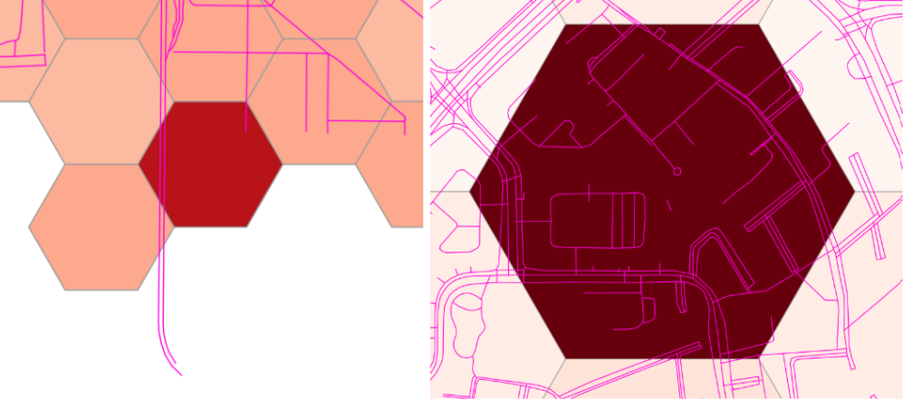
The differences between the maps over time are not obvious in these maps as the changes were not drastic. Some areas may experience an increase in shortest distance to a school but the change may not be big enough to warrant a shift in class. Hence, we created maps to showcase the differences between 2 different time periods.
From these maps, it is clear that for the most part of Singapore, there was not much change in shortest distance to a school and increases in distance are concentrated in areas where a school closed down due to a merger.
For the difference in accessibility between 2018 and 2019, there appears to be no particular pattern in change of shortest distance to a school when comparing the map to locations of primary school mergers in 2019 (Figure 1). Random changes in the shortest distances to a school could be due to errors in data collection or preparation.
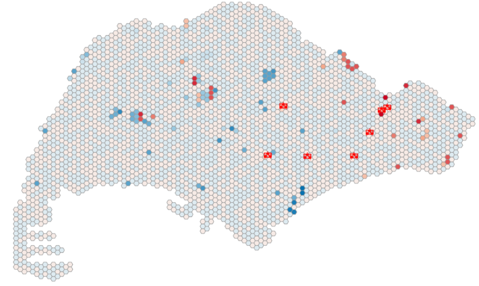
Figure 2: Difference in Accessibility of Primary Schools between 2018 and 2019, with locations of schools that closed due to 2019 mergers
Between 2019 and 2024, there appears to be specific areas affected by the school closures. When compared to the locations of schools that will be closing due to future mergers (yellow icons), the clusters appear to correlate (Figure 2).
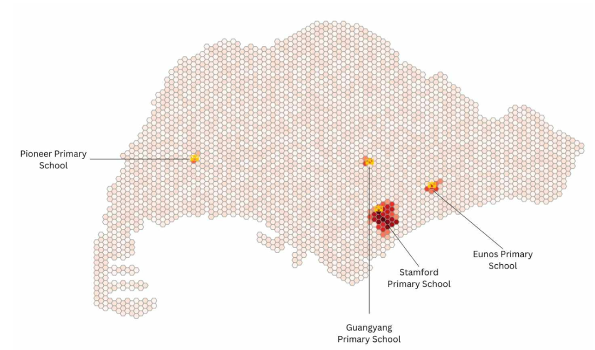
Figure 3: Difference in Accessibility of Primary Schools between 2019 and 2024, with locations of schools that will close due to future mergers
From figure 3, it can also be seen that the closure of Stamford Primary School will have a disproportionately higher impact on the area surrounding it as compared to the other schools. This could be because there are no other schools located in that area so people staying in that area would have to travel further to reach a school.
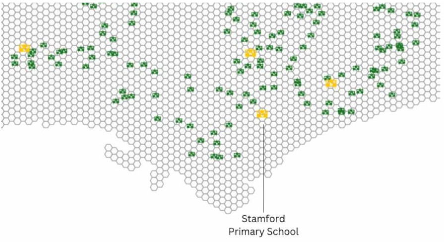
Figure 4: Zoom in to Primary School Locations
When analysed alongside the residential buildings (blue polygons) in the area surrounding the school, it can be observed that the impact of the closure of Stamford Primary School is not as great as the accessibility map implies.
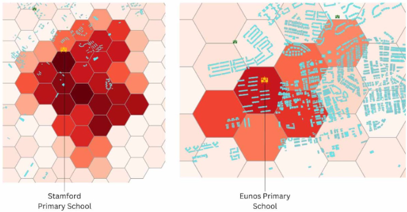
Figure 5: Comparison between Stamford and Eunos Primary School
Residential buildings located in the area affected by the closure of Stamford Primary School are sparse and far less in number as compared to that in the area affected by the closure of Eunos Primary School. Hence, it is pertinent to analyse our accessibility maps alongside the locations of residential buildings to get a clearer picture of the impact of school closures on the area.
Secondary School
The maps created show the distribution of access in Singapore to secondary schools. Similar to the primary schools, overall, it appears that the shortest distance to a secondary school increases towards the edges of Singapore, but is also high in the middle of the map, where various catchment areas and nature reserves reside.
Errors in this dataset are less prevalent, as can be seen in the legend going up to only 7818 metres. This is because all road networks were used, with the exception of bridleways, so it is unlikely for orphaned roads and dead ends to occur. It should also be noted that the road networks included railways to better represent the transport network students use to get to school (Mass Rapid Transport).
The differences between the maps over time are not obvious in these maps as the changes were not drastic. Some areas may experience an increase in shortest distance to a school but the change may not be big enough to warrant a shift in class. Hence, we created maps to showcase the differences between 2 different time periods.
From these maps, it is clear that for the most part of Singapore, there was not much change in shortest distance to a school and increases in distance are concentrated in areas where a school closed down due to a merger.
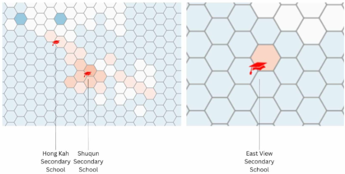
Figure 6: Difference in Accessibility of Secondary Schools between 2018 and 2019, with locations of schools that closed due to 2019 mergers
For the difference in accessibility between 2018 and 2019, it appears that the impact of the closures of the schools due to mergers is not that high on the area surrounding it. It ranges from 10 to 120 metres in the shortest distance to a school. The close ups also imply that the closures of Hong Kah and Shuqun Secondary Schools have an impact on a wider area than that of East View Secondary School.
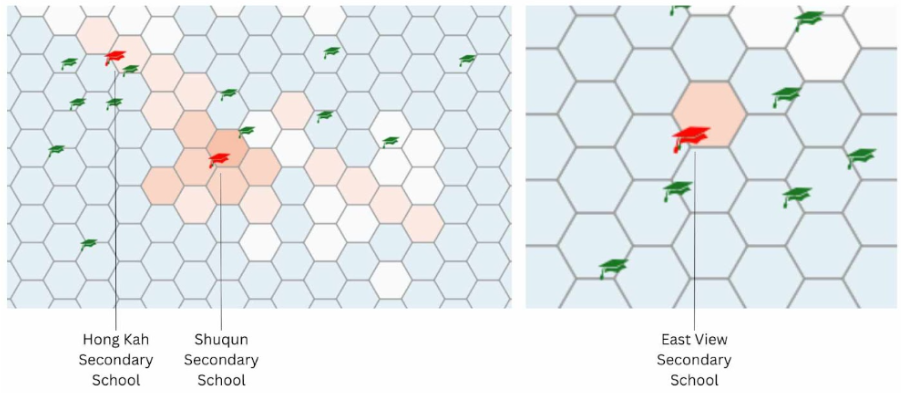
Figure 7: Zoom in to Secondary School Locations
On further analysis with the schools currently surrounding the merged schools, it appears that the abundance of secondary schools surrounding East View Secondary School could have mitigated the impact of the merger with regards to the way we calculated it. For the merger of Shuqun Secondary School, the areas on its bottom right could have had a different school as its nearest school via the road network used and were thus 'not affected' by the closure of Shuqun Secondary School.
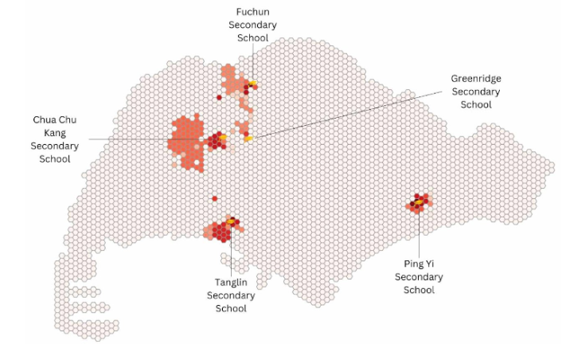
Figure 8: Difference in Accessibility of Secondary Schools between 2019 and 2024, with locations of schools that will close due to future mergers
At a glance, the areas around the schools to be closed will experience an increase in the shortest distance to a school. This could be because there are no other schools located in that area so people staying in that area would have to travel further to reach a school. From figure 8, it seems that the closure of Chua Chu Kang Secondary School will have an impact on the largest area around it as compared to the other schools, and hence have the greatest impact.
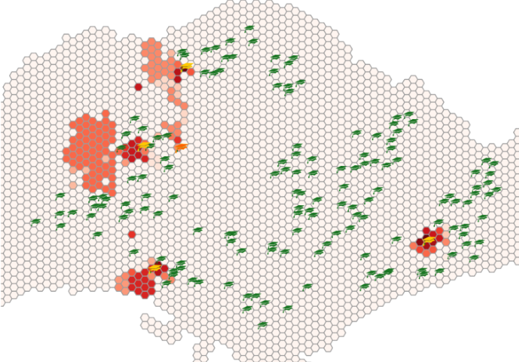
Figure 9: Zoom in to Secondary School Locations
When analysed alongside the residential buildings (blue polygons) in the area surrounding the school, however, it can be observed that the impact of the closure of Chua Chu Kang Secondary School is not as great as the accessibility map implies.
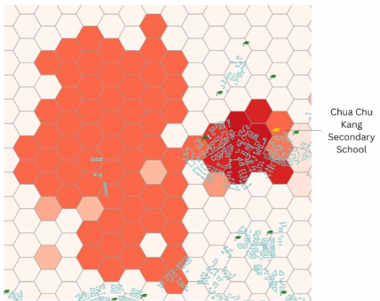
Figure 10: Homes Located in the Area Affected by Closure of Chua Chu Kang Secondary School
The huge area affected by Chua Chu Kang on the left side of figure 10 contains only a few houses affected by the closure.
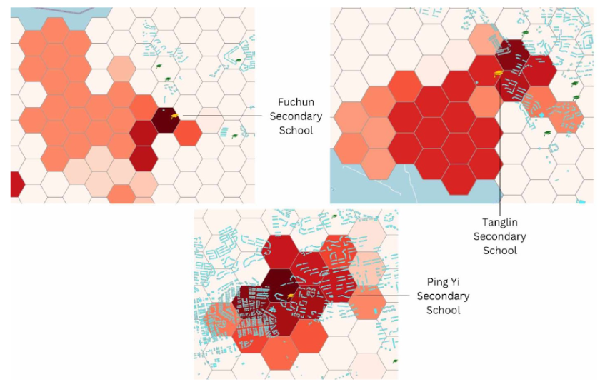
Figure 11: Homes Located in the Area Affected by Closure of Various Secondary Schools
After analysing figure Y, though it seems to affect the smallest area, the closure of Ping Yi Secondary School is projected to affect the most number of residential buildings as there is a great number of them located within the area affected.
Post-Secondary School
The maps created show the distribution of access in Singapore to secondary schools. Similar to the primary schools, overall, it appears that the shortest distance to a secondary school increases towards the edges of Singapore, but is also high in the middle of the map, where various catchment areas and nature reserves reside.
Errors in this dataset are less prevalent, as can be seen in the legend going up to only 7818 metres. This is because all road networks were used, with the exception of bridleways, so it is unlikely for orphaned roads and dead ends to occur. It should also be noted that the road networks included railways to better represent the transport network students use to get to school (Mass Rapid Transport).
As there will not be any merger taking place for post-secondary schools after Year 2019, we will be focusing on the mergers that have taken place. Post-secondary schools are accessible in areas located in the Central and the North region. Few dark red spots can be spotted in the north area while the rest of the red spots are seen at the right end of the map. This shows that it is harder to access schools that are in the east area and the cluster is located in Pasir Ris.
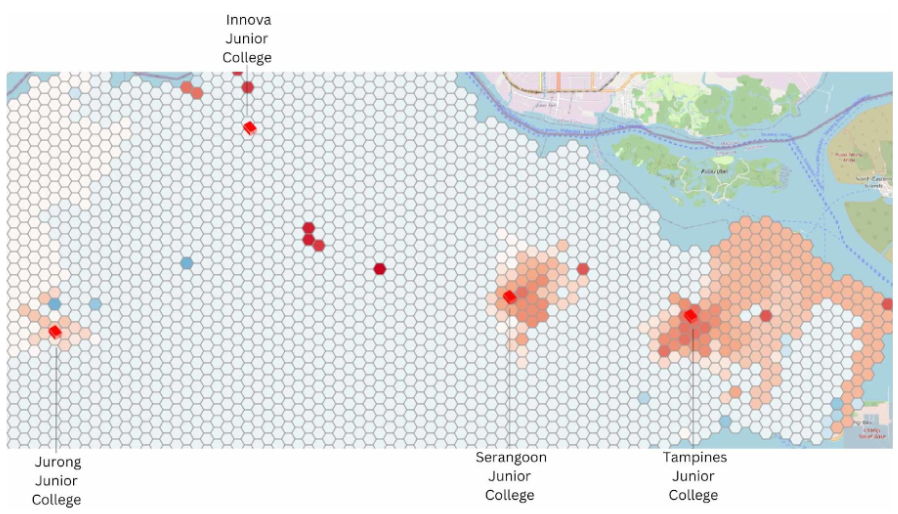
Figure 12: Difference in Accessibility of Post-Secondary Schools between 2018 and 2019, with locations of schools that closed due to 2019 mergers
As before, we should look into reasons for the varying differences caused by the closures of these schools. The closure of Tampines Junior College seems to affect the largest area as seen from figure 12, while the closure of Innova Junior College appears to have had no effect on the area around it.
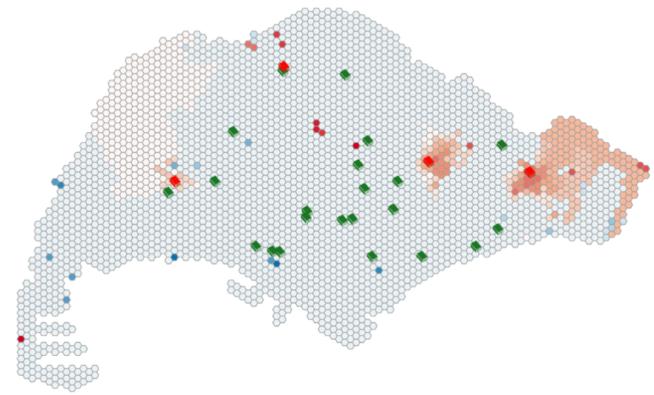
Figure 13: All Post-Secondary School Locations
From figure 13, we can infer that it is because Tampines JC is the school located on the easternmost part of Singapore, so it is the nearest school for a large portion of Eastern Singapore. Very near Innova JC is Singapore Sports School which could explain why our map identifies no change in accessibility for the area surrounding Innova JC.
To find out if the closure of Tampines Junior College indeed has the highest impact on Singapore, we should analyse it alongside the locations of residential buildings (blue polygons).
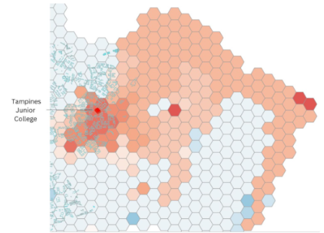
Figure 14: Homes Located in the Area Affected by Closure of Tampines Junior College
While its closure definitely affects a good number of homes nearest to it, it is not as large as the area we had seen to be affected. Majority of the area indicated to be affected by the closure does not contain any residential buildings.
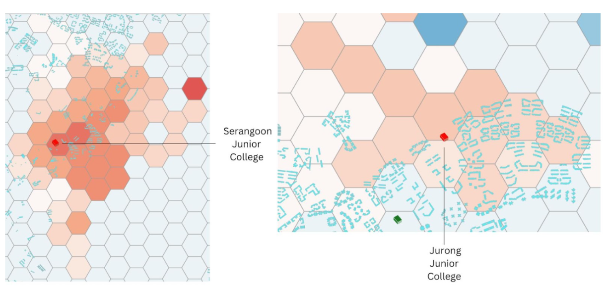
Figure 15: Homes Located in the Area Affected by Closure of V arious Post-Secondary Schools
After analysing figure 15, it appears that the closure of Tampines Junior College still affects the most number of homes as it has the most residential buildings located in the area affected by its closure. The area is also the most heavily impacted, as the distance to the next nearest Post-Secondary School increased the most as well.
Impacts on School Mergers:
We know that 9 pairs of schools merging from 2022 to 2024 will cause the accessibility level to decrease drastically and the reasons behind it are caused by falling birth rates and changing demographics in our housing estates. This would also mean that the transportation methods for students to travel to school might change with mergers taking place. It is also said by the government (gov.sg) that merging could be beneficial for students as Schools with low enrolment find it challenging to offer a wide range of subject combinations, educational programmes and co-curricular activities (CCAs). The mergers will provide schools with the healthy enrolment needed to continue to provide a rich variety of learning programmes and experiences for our students.
Transport Analysis:
When choosing schools to merge, according to MOE, the site for the merged school is chosen based on quality of infrastructure and accessibility to transport (Sin, 2017). To test this, we will analyse the selection of the site of Anderson Junior College over the site of Serangoon Junior College in their mergers to form Anderson Serangoon Junior College.
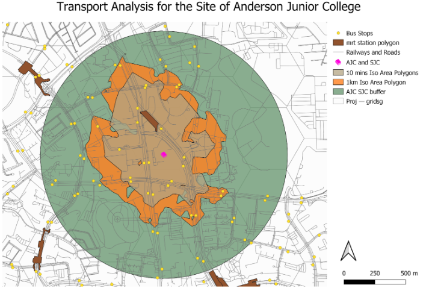
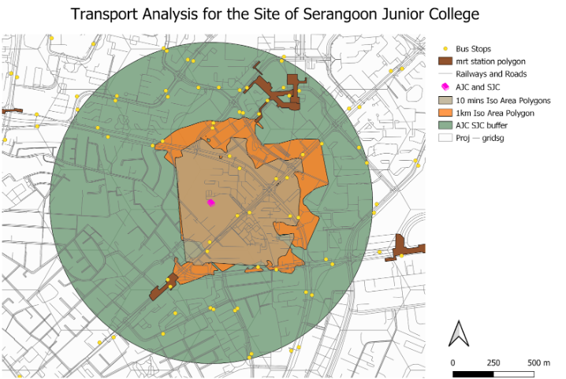
From the print layouts, we can see how many bus stops and MRT Stations are located within walking distance of the junior colleges. Walking distance has been represented with 1 km buffer zones, 1 km Iso-Area Polygons and 10 minutes Iso-Area Polygons.
For the site of Anderson JC, there are 16 bus stops and 1 MRT station – Yio Chu Kang MRT within the smallest catchment area, the 10 minutes Iso-Area Polygons. For Serangoon JC, only 10 bus stops are within the same catchment area type, and two MRT stations – Hougang MRT and Kovan MRT barely touch the borders of the 1 km Iso-Area Polygon. Hence, it is clear that the site of Anderson Junior College should be the site of the merged school Anderson Serangoon Junior College when considering the aspect of access to transport.
Limitations:
Some of the limitations that our groups faced are:
we did not take into account changes in infrastructure/transport over time, some road networks/mrt stations could be non-existent in 2018. Similarly, more roads/mrt stations could increase accessibility in 2024 that we did not account for
In actuality, the accessibility of schools cannot be measured using just the shortest distance to a school, but should take into account accessibility to schools of different academic calibres, school fees if applicable and types (art school, sport school)
We eliminate the fact that there are possibility of schools that have closed down
We also assumed that schools that exist in the 2024 dataset already existed in 2019